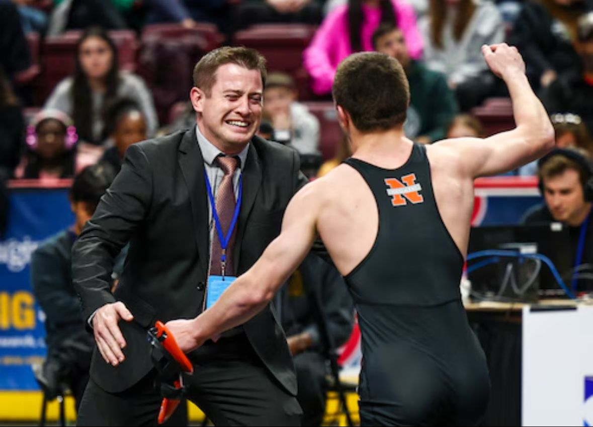

PIAA champion at 114 pounds
Brayden Wenrich
- 36–1 as a sophomore
- District XI, Northeast Regional, and PIAA champion
- Fastest pin of the season: 9 seconds
- 80–7 career record

Since 1945. Eastern Pennsylvania Conference, PIAA District XI.
14–3 dual meet record
3rd at the PIAA State Tournament
2 state champions
3 Northeast Regional champions
5 state qualifiers
Brayden Wenrich and Gabe Ballard won PIAA titles in Hershey in March 2026, the first time since 2004 that Northampton crowned two state champions in the same year.
PIAA champion at 114 pounds

PIAA champion at 152 pounds

Northeast Regional champion and state 7th at 139. Finished his career 140–26.

State qualifier at 133.

State qualifier at 160.

Northampton Wrestling began in 1945. More than 80 seasons later, the program runs from kindergarten through varsity, and every Konkrete Kid comes through the same room, the same expectations, and the same black and orange.
Our mission is to give young people a supportive, demanding place to grow as wrestlers and as responsible, resilient, respectful members of the community. We never sacrifice goodness for greatness. Integrity and honor come first, and winning is the byproduct.

27 PIAA state champions since 1955. These are the last ten.
7 PIAA team titles
27 individual state titles
136 state medals
98 regional titles
143 District XI titles
42 100-win wrestlers
926 dual meet wins
“The credit belongs to the man who is actually in the arena, whose face is marred by dust and sweat and blood; who strives valiantly; who errs, who comes short again and again… and who at the worst, if he fails, at least fails while daring greatly.”